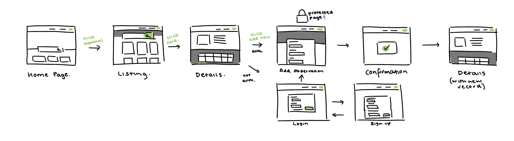
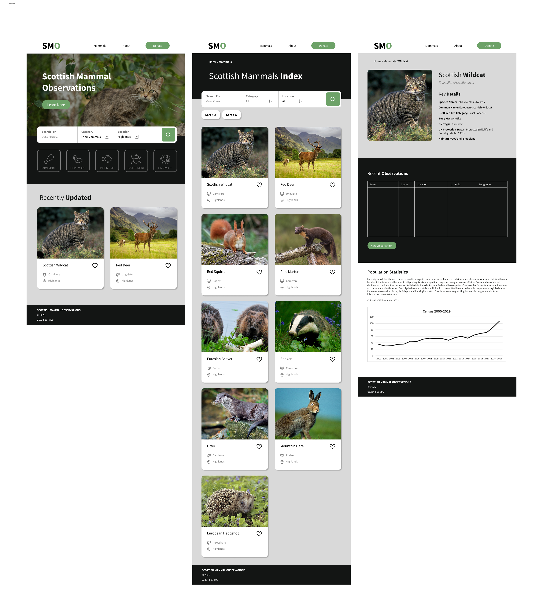
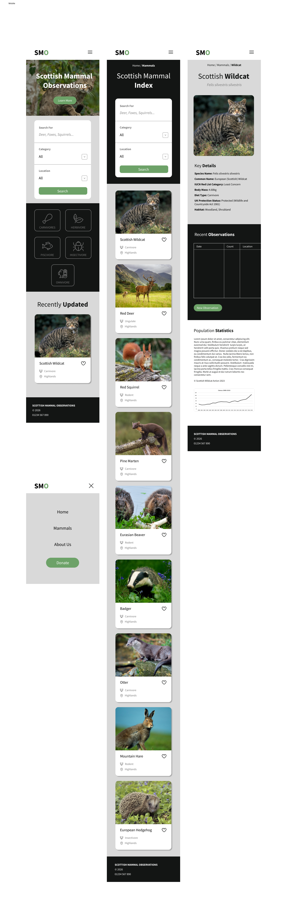

Project Requirements
Create a basic PHP/MySQL website displaying 34 Scottish mammal species and 3,863 observation records dating from 1981-2016. Features to include:
- Species catalogue with images
- Detailed species pages with full observation history
- Interactive map plotting observation locations via lat/long coordinates
- Search and filter by conservation status, diet and habitat
- Sortable species table
- Date range filtering for observations
- Full CRUD functionality
- Data visualisations showing species distribution statistics
- User authentication and session management
- Contact form with client-side validation
Interface Design
User Flow
First, I established the core user flow for the site, mapping out how users would navigate between the homepage, species catalogue, individual species pages. I focused on creating an intuitive structure that would allow users to easily access the information they were looking for while enforcing user authentication for data management features (CRUD operations).

Figma Prototypes
I created high-fidelity prototypes in Figma to visualise the design of the site across desktop, tablet and mobile devices. I focused on a clean, modern aesthetic with a nature-inspired colour palette (greens & neutral tones) to reflect the site's focus on wildlife. The prototypes included key pages such as the homepage, species catalogue, species detail pages, ensuring a consistent user experience across all devices.



Implementation
During the implementation phase, many changes and additions were added to the site to ensure it met the project requirements and provided a good user experience. The initial prototype was also designed with my own programming skills in mind, but as I progressed in my learning, adjustments to the design to accommodate new features and technical capabilities were made. For example, many alterations were made to the table layout to enhance the UX of the site, including mouseovers and coloured buttons as well as a filter bar.
The final implementation of the site can be seen below:
Evaluation and Reflection
The website prototype demonstrates strong alignment with established usability principles, including clear user feedback through flash messages, descriptive form validation, and a minimalist interface. However, some user experience gaps remain; most notably, users are redirected to the home page after logging in rather than back to their previous location, which interrupts their workflow. Design trade-offs were made in favour of simplicity, such as using server-side rendering instead of a JavaScript framework and a basic table layout, which keep the codebase accessible but limit interactivity and performance with large datasets.
On the technical side, the code is readable and well-structured, though JavaScript logic embedded within PHP files reduces maintainability and reusability. The most pressing technical issue is the lack of pagination, which causes slow load times when handling large volumes of data; a problem that will worsen as the database scales. Security also needs attention, as the system currently allows any user to sign up and modify data without admin approval. Priority next steps include implementing pagination for scalability and tightening access control to protect data integrity before any public deployment.